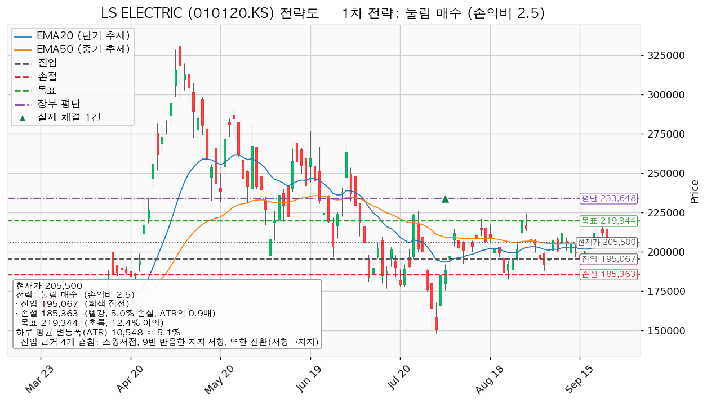
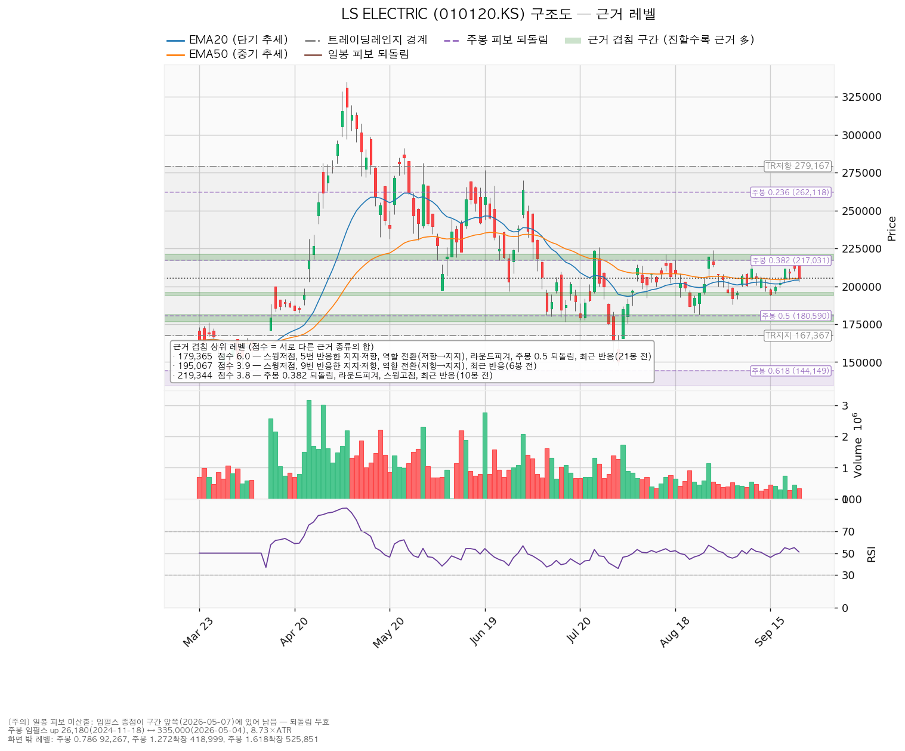
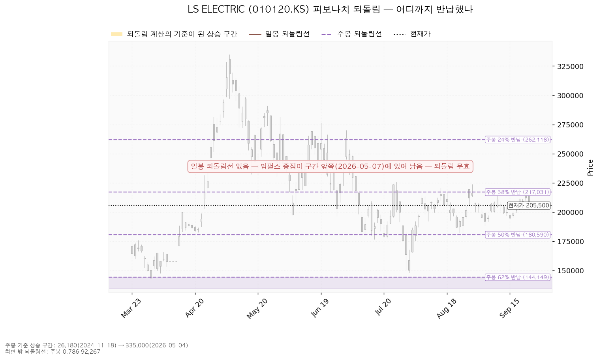
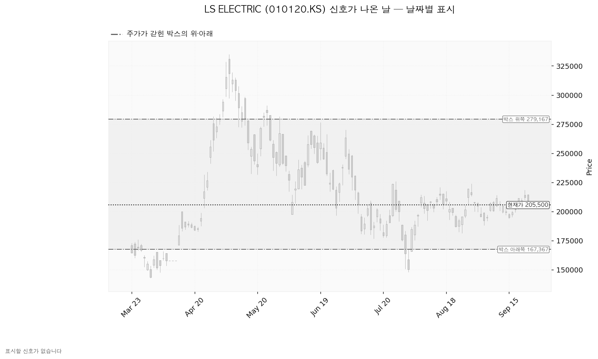

LS ELECTRIC(010120.KS)은 배전반·차단기·변압기 같은 전력기기와 전력 계통 자동화 설비를 만드는 한국 기업이며, 데이터센터·산업 설비용 전력 인프라와 해외 수출 비중이 큽니다.
| 구분 | 가격 | 판정 방식 | 현재가 대비 | 상태 |
|---|---|---|---|---|
| 진입선(눌림 매수) | 195,067원 | 장중 저가로 닿으면 지정가 매수 | -5.08% (0.99 ATR) | 대기 |
| 집행 손절 | 185,363원 | 장중 저가 터치 — 보유 39주에 지금 걸려 있고 추가 51주에도 같이 걸립니다 | -9.80% (1.91 ATR) | 유지 중 |
| 관망 종료 기준 | 2026-10-22 실적 | 날짜 기준 — 진입선이 현재가 아래라 닿지 않은 채 끝나는 가격 조건이 없습니다 | — | 대기 |
| 상승 전환 기준선 | 212,625원 | 일봉 종가 회복 후 지지 — 이 길로 가면 눌림 매수는 체결되지 않으므로 재분석합니다 | +3.47% (0.68 ATR) | 미회복 |
| 확인선 | 219,344원 | 일봉 종가 돌파 | +6.74% (1.31 ATR) | 미돌파 |
| 폐기선(구조) | 167,367원 | 이탈 후 3거래일 내 회복 실패 + 반등에서 저항으로 확인 | -18.56% (3.62 ATR) | 하루 변동폭 3배를 넘어 실무상 작동하지 않음 — 실제로 볼 선은 집행 손절 185,363원입니다 |
① 성적표 — 직전이 건 조건은 전부 미충족입니다. 회복선 212,625원(종가 회복)에 가장 가까웠던 것이 9월 22일 종가 212,000원으로 625원 모자랐고(그날 장중 고가는 218,500원), 목표 219,466원·집행 손절 193,769원·관망 종료 187,150원·폐기선 172,400원은 어느 것도 닿지 않았습니다.
② 좌표 이동. 회복선 212,625원은 그대로이고, 확인선은 219,466원에서 219,344원으로(주봉 0.382 되돌림 재계산), 폐기선은 172,400원에서 167,367원으로(박스 하단 값 채택) 내려왔습니다. 대표 셋업이 돌파 매수(진입 212,625원, 손익비 1:0.36)에서 눌림 매수(진입 195,067원, 손익비 1:2.50)로 바뀌었습니다.
③ 판단 변화 — 직전 '패스'에서 이번 '조건 대기'로 바뀌었습니다. 9월 15일 저점 193,800원으로 193,800~195,700원 가격대가 다시 반응을 받아 진입 후보가 됐고, 손절을 그 아래 188,000~190,000원 구간 밑에 둬도 목표까지 2.30 ATR이 남아 손익비가 1을 넘었습니다.
| 항목 | 값 |
|---|---|
| 셋업 | 눌림 매수(평균회귀) — 구조 증명도 선취형(구조 미확인) |
| 진입 / 손절 / 목표 | 195,067원 / 185,363원 / 219,344원 |
| 손익비 | 1:2.50 (손절 폭 0.92 ATR · 4.97%) |
| 진입 근거 겹침 | 스윙저점 · 9번 반응한 지지·저항(195,700원) · 역할 전환(저항→지지) · 6거래일 전 반응 |
| 손절 근거 | 188,000~190,000원 겹침 구간 바로 아래 |
| 청산 | 219,344원에서 전량 매도 (목표 도달) — 단일 목표, 트레일링 없음 |
대표로 고른 근거는 손익비 2.5와 선취형이라는 구조 증명도, 그리고 진입 근거의 겹침입니다 — 함께 산출된 돌파 매수(1:0.31)와 지지 확인 매수(1:0.69)는 둘 다 손익비 1 미만이어서 보류입니다. 이 셋업에는 더 넓은 구조적 손절이 따로 산출되지 않았으므로 1:2.50이 구조적 손절 기준 값이며, 손절을 조여 만든 수치가 아닙니다. 203,075원에서 절반을 덜어내는 분할안도 산출됐지만 전 구간 손익비가 1:2.50에서 1:1.67로 내려가므로 쓰지 않습니다. 219,344원은 목표이면서 확인선입니다 — 그 자리에서 막혀 되밀리면 전량 매도 (목표 도달)이고, 일봉 종가로 넘으면 상승 확정이므로 그 위 구간은 이 포지션의 연장이 아니라 새 리포트로 다시 잡습니다. 계획 진입가 195,067원은 평단 233,648원 아래여서 평단을 낮추는 매수입니다.

| 단계 | 트리거 | 행동 |
|---|---|---|
| 1 관찰 | 일봉 종가가 195,067원 아래로 마감 | 추가 매수만 중단. 집행 손절은 그대로 둡니다 |
| 2 경고 | 이탈 후 3거래일 안에 195,067원을 종가로 회복하지 못함, 또는 그 전에 일봉 종가가 184,519원 아래로 마감 — 둘 중 먼저 오는 쪽 | 되돌림 지지 상실 쪽이 우세해진 상태로 봅니다 |
| 3 무효 | 반등이 195,067원에서 막히고 그 아래로 되밀림 | 구조 해석을 폐기하고 새 구조가 만들어질 때까지 관망 |
집행 손절 185,363원은 이 판정과 무관하게 따로 작동하며, 2단계 기준 184,519원보다 위에 있어 진입한 경우에는 2단계에 이르기 전에 손절이 먼저 체결됩니다. 장중 일시 이탈은 어느 단계에도 해당하지 않습니다.
논지 무효화 — 폐기선 167,367원이 현재가에서 3.62 ATR 아래라 실무상 쓸 수 없으므로, 가격이 아닌 기준을 함께 둡니다. 10월 22일 실적에서 내년 EPS 추정 5,077원이 하향으로 돌아서면(현재 90일 +16.7% · 30일 +0.8%) 배수 수축이라는 해석 자체가 깨지므로 그때 이 리포트를 폐기합니다.
상승 전환 — 212,625원을 일봉 종가로 회복한 뒤 지지되고 219,344원을 종가로 넘기면 상승 확정입니다. 이 경로로 가면 195,067원 지정가는 체결되지 않으므로 그 시점에 새로 분석합니다.
횡보 지속 — 167,367원을 지키며 219,344원 아래에서 박스가 유지되는 갈래이며, 매물 소화에 시간이 필요한 국면입니다. 추적 항목은 박스 안쪽 관측치 세 가지입니다 — 지지 테스트 거래량은 혼조(1.03 → 0.93 → 0.67 → 1.28 → 0.60배), 박스 내 저점은 절상, 상승봉 거래량은 하락봉의 1.13배입니다. 이 갈래에서도 195,067원 지정가는 그대로 유효합니다.
시나리오 폐기 — 167,367원을 이탈한 뒤 3거래일 안에 종가로 회복하지 못하거나 그 전에 일봉 종가가 156,819원 아래로 마감하고, 반등에서 167,367원이 저항으로 확인되면 사는 쪽이 우위라는 판정을 거두고 매물을 내놓는 국면으로 봅니다. 이때 보유분은 167,367원 종가 이탈 시 전량 매도 (시나리오 폐기)입니다.
| 가격대 | 겹친 근거 |
|---|---|
| 217,031~221,000원 | 주봉 0.382 되돌림(217,031원) · 220,000원 라운드피겨 · 스윙고점 · 10거래일 전 반응 |
| 210,000~214,500원 | 210,000원 라운드피겨 · 9번 반응한 212,000원 가격대 · 스윙고점 2개 · 10거래일 전 반응 |
| 193,800~195,700원 | 스윙저점 · 9번 반응한 195,700원 가격대(저항→지지 역할 전환) · 6거래일 전 반응 |
| 188,000~190,000원 | 스윙저점 · 190,000원 라운드피겨 · 6거래일 전 반응 |
| 176,500~181,200원 | 5번 반응한 178,950원 가격대(저항→지지 역할 전환) · 180,000원 라운드피겨 · 주봉 0.5 되돌림(180,590원) · 스윙저점 |
박스는 90봉 창(167,367~279,167원)으로 판정했고, 727봉을 조회해 40·90·180봉을 모두 시험한 결과 90봉에서 가격이 가장 잘 지켜졌습니다(180봉 창은 유효하지 않았습니다). 폭이 10.6 ATR이라 회복선·확인선은 박스 경계가 아니라 그 안쪽의 겹침 구간입니다. 직전 구간(107,100~238,800원)에서 위로 올라와 이 박스로 들어왔으므로 다시 모으는 국면과 매물을 내놓는 국면이 갈리는 자리이고, 박스 안쪽 판정은 저점 절상과 상승봉 대 하락봉 거래량비 1.13배를 근거로 사는 쪽이 우위입니다.

되돌림선은 주봉만 씁니다. 기준 상승 구간은 2024년 11월 18일 26,180원에서 2026년 5월 4일 335,000원까지이며, 0.382 되돌림 217,031원이 확인선의 근거이고 0.5 되돌림 180,590원이 176,500~181,200원 구간에 겹칩니다.

신호일은 이 구간에서 산출된 것이 없습니다 — 지지선을 잠깐 뚫고 되돌아오는 움직임(속임수 하락)이나 고점을 살짝 넘겼다 되밀리는 움직임이 잡히지 않아 아래 차트에는 표시할 날짜가 없습니다.

후행 배수와 후행 EPS는 받지 못했습니다(결측). 선행 배수는 40.5배이고 이익 성장률은 올해 +85.0% · 내년 +42.2%입니다. 목표주가는 23명 평균 275,813원, 최저 180,000원, 최고 350,000원이며 현재가 205,500원은 최저 목표 위·평균 아래에 있습니다. 52주 고점에서 -38.66% 내려온 동안 내년 EPS 추정은 90일간 +16.7% 올라갔으므로 이 하락은 배수 수축이며 사업 악화가 아닙니다. 다만 최근 30일 변화는 +0.8%로 상향이 거의 멈췄고, 다시 붙을 계기로 댈 수 있는 것은 10월 22일 실적뿐이며 그 밖의 재평가 계기는 이 자료로 확인할 수 없습니다. 현금흐름은 적자가 아닙니다 — 2025년 12월 31일 결산 기준 영업현금흐름 2,999억원, 잉여현금흐름 904억원이고 설비투자가 +38.2% 늘었으므로 그 투자가 이익으로 돌아오는지가 확인 항목입니다. 평균 목표 275,813원은 현재가 대비 +34.2%인데 내년 EPS 5,077원에 54.3배를 매긴 값이어서, 선행 40.5배에서 배수가 확장되는 데 거의 전부를 기대고 있습니다.
2026-10-22 3분기 실적 — 내년 EPS 추정 5,077원이 계속 오르는지와 설비투자 회수 속도를 봅니다. 다음 실적 이후 2~3개 분기 구간에 이미 알려진 역풍은 확인할 자료가 없습니다.
계좌 평가액 139,498,400원에서 한 종목 한도 13%는 18,134,792원이고, 보유 39주 평가액이 8,014,500원(5.75%)이므로 추가로 실을 수 있는 금액은 10,120,292원입니다. 195,067원에서 51주(9,948,400원 · 계좌의 7.13%)까지이며, 합계는 12.88%로 한도 안입니다. 손절 폭에서 역산한 비중은 계좌의 20.1%였으므로 13% 한도가 실제 제약입니다. 추가분 손실 한도는 494,888원(계좌의 0.35%)이고, 보유 39주까지 합친 미결제 손실 합계는 1,280,231원(0.92%)입니다. 테마 'AI전력' 합계는 14.47%에서 21.60%로 올라가며 한도 35% 안입니다.
하루 평균 변동폭이 주가의 5.13%인데 손절 폭은 0.92 ATR(4.97%)이라 논지가 맞아도 평범한 하루 움직임 한 번으로 체결될 수 있습니다. 시계는 수 주이고 컨센서스는 12개월이므로 같은 층위가 아닙니다. 판정은 조건 대기이며, 195,067원에 닿으면 51주 매수(손익비 1:2.50)이고 미달 항목 중 다음에 볼 것은 거래량 강도입니다 — 눌림 구간인데 5일 평균 거래량이 20일 평균의 0.91배로 아직 마르지 않아 파는 쪽이 남아 있습니다.
ATR은 하루 평균 변동폭(10,548원)이며, 레벨까지의 거리를 평범한 하루 등락의 몇 배인지로 환산할 때 씁니다. 되돌림선은 큰 상승 구간을 되돌린 비율(0.382·0.5 등)로 계산한 가격선입니다. 손익비는 손실 1을 걸었을 때 기대하는 이익 배수이며 1 미만이면 걸지 않습니다.